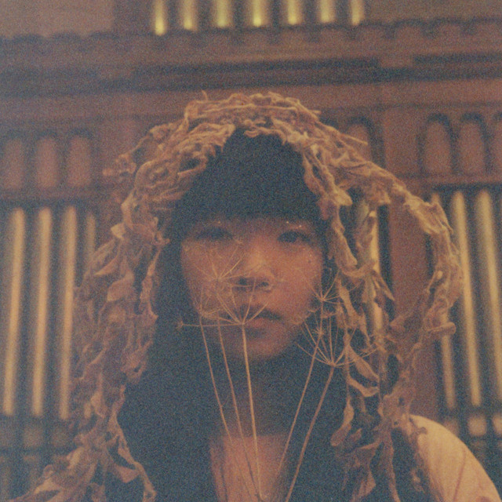

UwU, OwO, Mahal, Love, Baby, Mhie, Chiqooo
Happy Birthday Mahal
Hi mahal, happy birthday yieeeeeeeeeeeeeeeeeee bday na nya hays, parang now lang ako malulungkot sa bday mo ahh, pero masaya pa rin syempre kasi nga bday m, special yun wag m sinasabi na di special bday mo pagalitan kita eh, gagi kainis kayaaaaaaaa may message na ko na ginawa eee tas ginagawa mahaba na yunn (yung script mema hahahaha) yung cp ko kasi ayaw mag bukass waaa, pero ok lang di naman ako magsasawa na mag sabi or mag sulat ulit or gumawa ng gumawa ng message para sau ih, ikaw na yan e, angas nu galaxy, fav mo kasi astronaut dibaa, kaya i2 kahit simple lang atleast fav m, sobrang ganda mo lagi sobra sobra, mag enjoy ka, gumala ka, gumala kayoo ng friends m, i celeb m bday m ng super saya, wag mo q isipin (nag assume e no) HAHHAHAHAHA joke lang, pero shempre dapat lagi mo uunahin sarili moo, masaya aq kasi masaya ka naa kasi mas peaceful ka ngayon, sobrang miss na kita yung dati, yung tayoo, sobra, sana pwede pa soon nu?
Gusto ko mag sorry sayo, sa lahat. Sinayang ko lahat sobra, gusto ko mag sorry sayo lagi, manghingi ng tawad sa mga ginawa ko sayo noon na hanggang ngayon nandyan pa rin sa isip m, alam q sobrang sakit nung ginawa ko na yunn, sorry talagaaa, super siraulo ko kasii di sapat yung word na gago ako di sapat yung mga words para laiitin ako ganon, kasi galit na galit rin aq sa sarili q kaya minsan gusto q nalang saktan rin sarili ko kasi di maeexplain yung sakit na ginawa ko sayo, hanggang ngayon di pa rin ako makalimot sa mga ginawa ko sayo, sobrang sobrang sama ko, sobrang nakakadiri kaya aq kaya sobrang grateful ko kasi tinanggap mo parin ako kahit naging ganon na ako sayo, tapos nung tinanggap mo ko gumawa nanaman ako ng mga mali na ikakapagod mo, hanggang sa yun naubos ka, napagod ka, pero tandaan mo tooooo, love na love pa rin kita hanggang ngayon simula nung una, di nag fade yung love ko, hinahanap pa rin kita lagi, hinahanap ko yung mga lambing mo, yung mga update mo, yung goodnight/goodmorning mo, yung mga bad/goodnews mo, yung mga kwento mo lagi sakin, yung mga chika mo, yung mga rant mo, lahat lahat hinahanap ko araw araw lalo na yung love mo, kung pano mo ko mahalin, ldr lang tayo no? pero grabe hahahaha ang layo na ng naabot natin waaaaaaaaaaaaaaaaaaaa proud na proud ako sayo sobraa!!!!, sobra mahal. sobrang proud waaaaaaaaaaaaaaaaaaaaaaaaaaaaaaaaaa miss kita lagi nga kasiiiiiiiiiiiiiiiiiiiiiiiiiiiiii pwede bang wag nalang??????????????? hshshah waa pag nakikita ko kung pano tayo nag end up dun sa messenger, parang sobrang messed up, kung pano tayo nag simulaa sobrang sama ng pag end up natin hahaha wtfff kasalanan ko kasiiiii tanginaaaaaaaaaaaaaaaaa mo valllllll di pa nga sapat yung pain na nafefefeel ko parang deserve ko lahat lahat ng sakit sa mundo sa mga ginawa ko sayoooo waa pag naiisip ko din e hahahaha gagi sobrang sakit pero wala e, nangyari na, di ko na mababalikan para ayusin pa hhshs kaya tinatanggap ko nalang lahat kung ano yung dumadating na sakit, kasi alam ko soon, matatapos din yung mga naiisip mo, yung mga nasasabi mo, sana nga mahal, sana.
This maybe cornyyyy pero kahit ldr tayo same lang naman yung mga araw/bwan na nakikita natin sa araw araw AHAHAHAHAHAHA ano dawwwwwwwww wtf CORNYYYYYYYYYYY pero yun nga ayoko tumigil sa pag gagawa ng message na to pero syempre di pa dito nagtatapos yan, hahabaan ko paaaa 5pm pa lang o, ka call pa nga kita eh, hahahaha gagi nalulungkot nanaman ako kasi di nanaman tayo maguusap huhu, pero alam ko naman na para sayo din tooooo, para mas maging ok ka, para maka heal ka na rinnn, para maging peaceful lalo yung utak mo sa mga iniisip mo mahirap man, wala namn kasi akong choice kung hindi sundin yung mga gusto mo mahal, ouch ibblock mo kohahah, imissyou mahal, sana soon pwede na no? sana magawa pa rin natin mga pangarap natin ng magkasma hahahaha waaa sana, naalala ko tuloy nung last bday mo ginawan din kita ng gantoo wala pang goodbye message yun kasi ngaa ok pa tayo nun eee, iniyakan mo panga ih, pero ngayon siguro di ka na iiyak, wag k na umiyak ah. kasi nagiging ok k na, pag umiyak ka may utang ka sakin 2m ha??? tandaan mo yan, ibibigay q 1m m wag ka mag alala he3hehe. gagi imissyouuuuuuuuuu yung una kasii nawala nadelete wtf siguro pabasa ko nalang ulit sayo yon if ichat mo na ko sa future tapos pag naayos yung phone ko na yun. di ako magsasawang gumawa ng lsm sayo !!, hehe ulit ulit ba, makulit aq e, di nga kita ni let go kahit alis na alis kna sakn ih, ih wag kac, HAHAHHA jokee pero ang kulit q dibaaa, selfish kong tao hays, di ka tuloyyy nag heal ng maayosssssssssssss ginugulo kita lagiii di ako nakakatiis, sobrang mahal kasi kita ee wag mo ko sisihin tskk.. he3hehe madami pa ko gusto sabihin sayoo mahal sobrang dami pa, sana masabi ko sayo lahat sa future, sana talaga Lord pleasee bigay nyo po sakin si lorraine sa bandang duloooo, love na love ko yang babae na yan. 4years mahal. mag 4 years mo na ako kasama sa bday m, kahit di kasama, siguro don na lang sa 'kakampi/kapiling' kahit magkalayo tayo, sana naramdaman mo yung lovee kooo kahit na yun, nag loko ako, sana naramdaaman mo lahat mahal. sana soon marealize mo mahal, kaya ko gawin lahat para sayo, mag papaka better ako ng mag papaka better para sayo mahal ko, sobrang sobrang gusto na kita mayakap, ma kiss, makasamaaaa sa lahat ng mga pangarap natin noon, waaaaaaaaaaaaaaaaaa happy happy birthday mahal ko, i love you so much my lorraine !!
=======⟡ three favorite things
- worn-out headphones (left side louder than the right)
- books that smell like old paper and time
- things that look ordinary but aren’t to me

kailan anniv natin???
pag yan nakalimutan mo tsk..